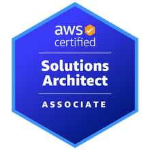
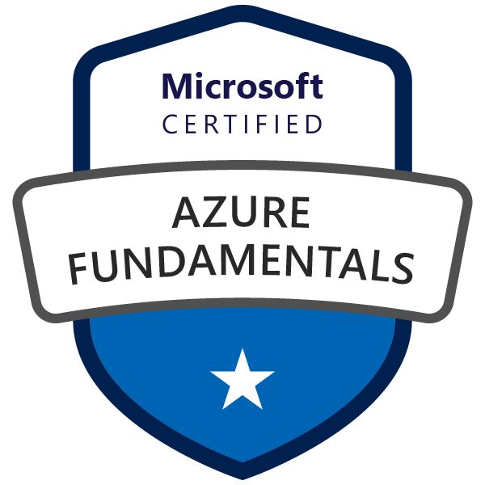
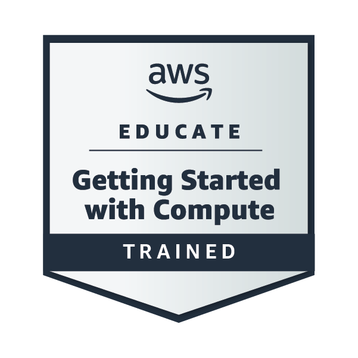
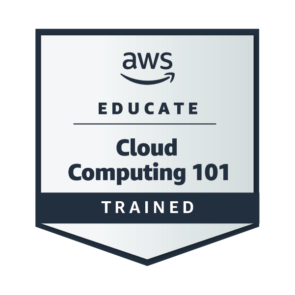
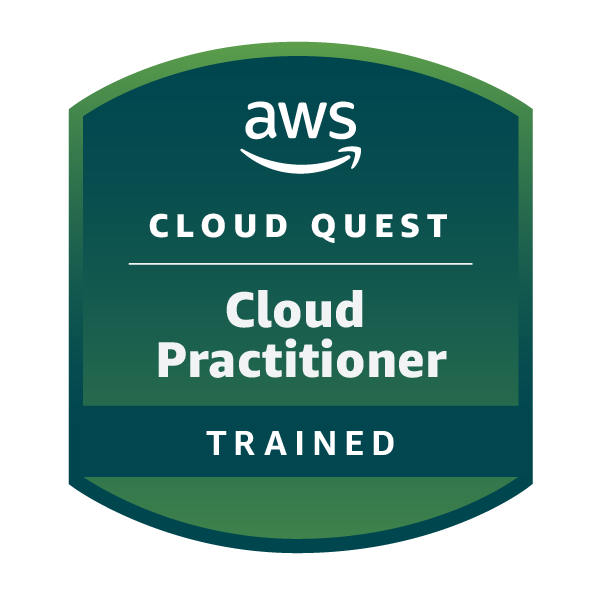
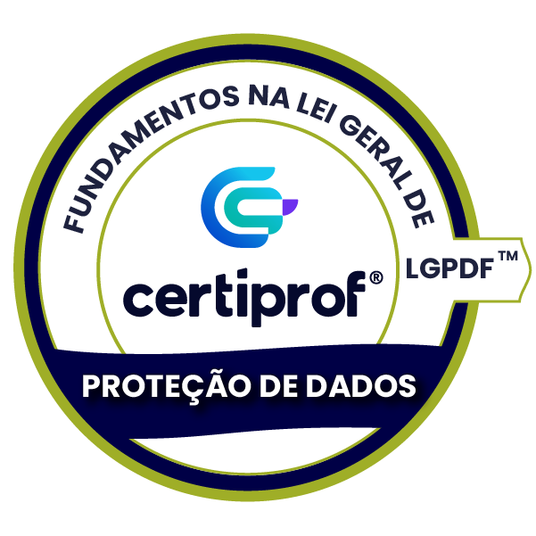
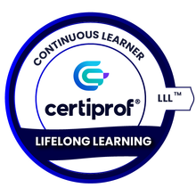

$ whoami
David Santana
Cloud · DevOps · SRE
Projeto e automatizo infraestrutura na AWS com Terraform, Ansible, Docker e pipelines de CI/CD — para que ambientes sejam escaláveis, reproduzíveis e fáceis de operar.



01. Sobre
Fala, rede! Sou o David, atualmente focado em Cloud, DevOps e SRE. Tenho mais de 6 anos de experiência em suporte de T.I., formação em Análise e Desenvolvimento de Software e pós-graduação em DevOps.
Sou capacitado para projetar e implementar soluções de infraestrutura e aplicações de alto desempenho, com foco especial em automação para garantir escalabilidade e eficiência — tanto em nuvem quanto em ambientes locais.
- 6+anos em T.I.
- 3certificações de nuvem
- 20+repositórios públicos
02. Skills
IaC & Containers
CI/CD
Linux
Windows Server
Monitoramento & Dev
03. Certificações
AWS Certified Solutions Architect – Associate
Amazon Web Services · dez 2023
AWS Certified Cloud Practitioner
Amazon Web Services · jul 2023
Microsoft Certified: Azure Fundamentals
Microsoft · mai 2023
Badges e treinamentos

AWS Educate: Getting Started with Compute
AWS · ago 2023

AWS Educate: Introduction to Cloud 101
AWS · ago 2023

AWS Cloud Quest: Cloud Practitioner
AWS · jun 2023

Fundamentos na LGPD — LGPDF™
Certiprof · abr 2022

Lifelong Learning
Certiprof · abr 2022
04. Projetos
terraform-djangoapp-project-ecs
Infraestrutura na AWS para uma aplicação Django em containers, provisionada com Terraform sobre o Amazon ECS.
terraform-djangoapp-project-as-lb
A mesma aplicação Django com Auto Scaling e Load Balancer, toda descrita em Terraform.
app-cadastro-django
Projeto de controle de produtos simples, usado como aplicação-base nos projetos de infraestrutura.
github-actions-cicd-kubernetes
Integração contínua: automatizando a entrega no Kubernetes.
github-actions-cicd-rollback-tests
Integração contínua: rollback e teste de carga.
github-actions-cicd-ecs
Integração contínua: automatize o deploy no Amazon ECS.
github-actions-cicd-ec2
Pipeline de entrega e implementação contínua na EC2.
github-actions-ci
Integração contínua: testes automatizados e pipeline no GitHub Actions.
terraform-kubernetes
Infraestrutura como código: Terraform e Kubernetes.
terraform-ansible-elastic
Montando uma infraestrutura elástica na AWS.
terraform-ansible
Infraestrutura como código: separando ambientes na AWS com Ansible e Terraform.
terraform-docker-ecs
Infraestrutura como código com Docker, usando Terraform para provisionamento e a AWS como provedor.
terraform-elasticbeanstalk-docker
Infraestrutura como código com Docker no Elastic Beanstalk, provisionada com Terraform.
terraform-cluster-docker-nodejs
Um app “hello world” Node.js em um cluster de alta disponibilidade e escalabilidade.
terraform-ansible-django
Infraestrutura como código: preparando máquinas na AWS com Ansible e Terraform.
05. Contato
Aberto a conversas sobre Cloud, DevOps e oportunidades. Me chama: